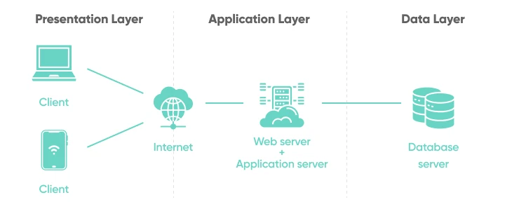
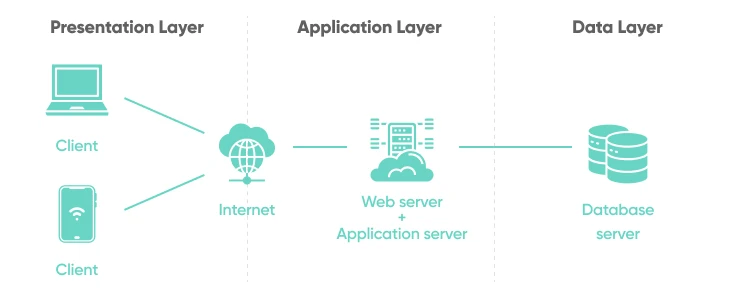

Welcome to Acme Platform documentation!¶
Acme Platform consist of different APIs that powers our Acme Application. It also have multiple worker process that does background work.
Acme Platform consist of different APIs that powers our Acme Application. It also have multiple worker process that does background work.
